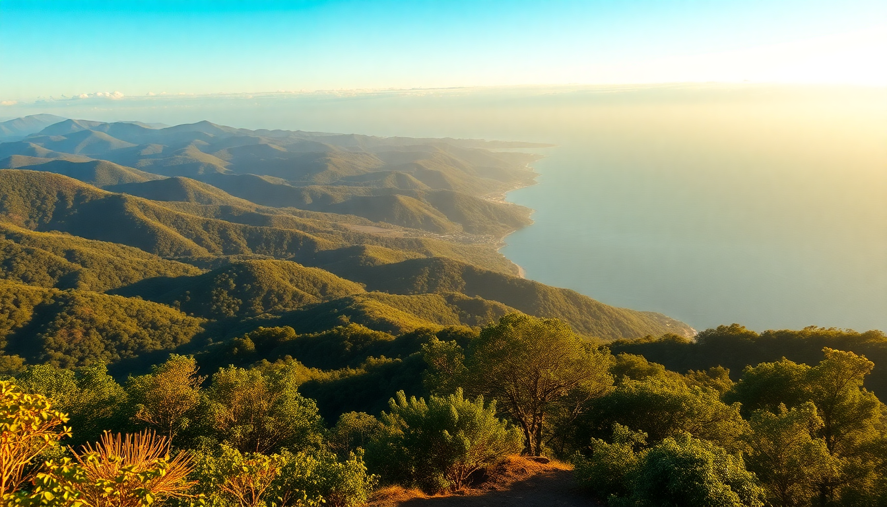

Best Day Trips from Medellín: Guatapé, Coffee & Santa Fe

I’ve spent weeks basing myself in Medellín, and after the first few days of exploring Comuna 13 and the nightlife in El Poblado, I started looking outward. The real magic of this city is how much incredible stuff sits within two hours of it. Here’s exactly how I’d plan three different day trips — Guatapé, a coffee finca, and Santa Fe de Antioquia — with the specific spots that made each one worth the early alarm.
Why base yourself in Medellín for day trips?
Medellín’s valley position means you’re within a 90-minute drive of radically different landscapes. The bus terminals are efficient, the roads are good (for Colombia), and you can sleep in your own bed in El Poblado or Laureles after a full day out. I found that booking a solid home base — I stayed at Hotel Park 10 in El Poblado — made the early mornings bearable because I knew a hot shower and a cold beer were waiting when I got back.
- Bus terminals: The main Terminal del Norte runs frequent buses to Guatapé and Santa Fe. For coffee fincas, you usually need a car or a tour.
- Best base neighborhoods: El Poblado (convenient but touristy) or Laureles (more local, better food prices).
- Transport tip: For Guatapé, catch a bus from Terminal del Norte — they leave every 20 minutes and cost about 15,000 COP. For the Coffee Region, rent a car or book a private driver.
What’s the best way to do Guatapé and El Peñol in one day?
Guatapé is the most popular day trip from Medellín, and for good reason. The main draw is El Peñol de Guatapé, the massive granite monolith with 740 steps cut into its side. I climbed it on a Tuesday morning at 7 a.m. — by 9 a.m. it was already crowded. The view from the top is genuinely stunning: a labyrinth of islands and reservoirs that looks like a flooded green quilt.
After the climb, head into the town of Guatapé itself. The main square, Plaza de los Zócalos, is lined with brightly painted buildings. I ate lunch at Restaurante El Jardín on the square — the bandeja paisa was heavy but exactly what I needed after the stairs. Skip the tuk-tuk tour of the town; the whole place is walkable in 20 minutes.
- Climb early: Arrive at El Peñol by 7 a.m. to avoid the tour buses from Medellín.
- Entry fee: 20,000 COP for the climb. Cash only.
- Lunch spot: Restaurante El Jardín for traditional Antioquian food. The trout is better than the bandeja paisa here.
- Boat ride: A 45-minute lancha tour around the reservoir costs 30,000 COP. Worth it for the perspective of the rock from the water.
- Overrated: The souvenir stalls at the top of the rock. Same stuff as the bottom, but pricier.
Can you really visit the Coffee Region as a day trip from Medellín?
Technically, yes — but you need to be strategic. The famous Coffee Triangle towns (Salento, Armenia, Pereira) are 4-5 hours by bus, which makes for a brutal round trip. Instead, I focused on the closer coffee fincas in the San Rafael or San Carlos areas, about 90 minutes east of Medellín. I booked a half-day tour at Finca La Magnolia, a working coffee farm that runs small-group English tours.
The tour walks you through the entire process: picking ripe cherries, pulping, fermenting, drying, and finally roasting. The guide, a third-generation coffee grower, let me taste the same bean roasted three different ways — light, medium, and dark — which changed how I buy coffee at home. Lunch was included: a simple plate of rice, beans, plantain, and grilled chicken, eaten on a patio overlooking the valley.
- Closest fincas: Finca La Magnolia and Finca La Rivera both offer half-day tours from Medellín.
- Transport: Most fincas include pickup from your hotel for around 150,000 COP per person.
- What you’ll do: Pick coffee cherries, see the drying patios, and do a cupping (tasting) session.
- Skip: The “coffee theme parks” near Montenegro. They’re expensive and feel like Disneyland.
- Best time: Harvest season is October to December, but tours run year-round.
Is Santa Fe de Antioquia worth the drive?
Santa Fe de Antioquia is a colonial town about 90 minutes northwest of Medellín, and it feels like a completely different century. The town was the capital of Antioquia until 1826, and the main square — Plaza Mayor — is surrounded by whitewashed churches and wooden-balconied buildings. I walked across the Puente de Occidente, a suspension bridge built in 1895 that still carries foot traffic over the Cauca River. It’s rickety and loud, but the views of the river below are spectacular.
The heat here is no joke — it’s much hotter than Medellín. I made the mistake of walking around at noon and regretted it. Stick to the morning or late afternoon. For lunch, I found Café de la Plaza on the corner of the square. Their arepas de chócolo with cheese and hogao were simple and perfect. The town is small enough that you can see everything in three hours, then head back.
- Bridge walk: Puente de Occidente is a 15-minute walk from the plaza. Free to cross.
- Museum: Museo de Arte Religioso in the old cathedral has gold-leaf altarpieces worth a look.
- Lunch: Café de la Plaza for arepas. Restaurante La Casa de la Abuela for a full meal.
- Heat warning: Bring water and a hat. It’s often 35°C by midday.
- Overrated: The “craft market” near the bridge. Mass-produced hammocks and cheap ponchos.
What should you pack for a day trip from Medellín?
The altitude and microclimates in Antioquia mean you can experience three seasons in one day. I learned this the hard way on my Guatapé trip — it was 28°C and sunny at the base of El Peñol, then windy and cool at the top, then pouring rain in town an hour later. A small daypack with layers is non-negotiable.
- Layers: A light rain jacket and a fleece or hoodie. You’ll shed and add them constantly.
- Footwear: Sturdy sneakers or hiking shoes for El Peñol and the coffee finca. Sandals for Santa Fe.
- Sun protection: Hat, sunglasses, and high-SPF sunscreen. The equatorial sun burns fast.
- Cash: Most fincas and small-town restaurants don’t take cards. Bring 50,000-100,000 COP in small bills.
- Phone: Download offline maps on Google Maps before you leave Medellín. Cell signal drops in the mountains.
FAQ
Is Guatapé too touristy to be worth it? It’s busy, especially on weekends, but it’s popular for a reason. Go on a weekday, arrive before 8 a.m., and you’ll have the climb mostly to yourself. The town itself is touristy — lots of souvenir shops and selfie sticks — but the view from the top and the boat ride on the reservoir are genuinely impressive. I’d say it’s a must-do, just manage your expectations for the crowds.
Can I do both Guatapé and a coffee finca in the same day? I wouldn’t recommend it. They’re in opposite directions from Medellín, and each trip takes a full day when you factor in transport and activities. You’d spend more time in a car than actually seeing anything. Pick one per day, or extend your stay in Medellín to four or five days so you can do all three without rushing.
Is Santa Fe de Antioquia safe for solo travelers? Yes. I went alone and felt completely safe walking around the town and the bridge during the day. The main square is lively with families and couples. Like anywhere in Colombia, avoid walking alone after dark on unlit side streets, but the tourist core is well-patrolled and welcoming. Stick to the plaza and the bridge area, and you’ll be fine.
Conclusion
- Guatapé is the classic day trip: climb El Peñol early, eat lunch on Plaza de los Zócalos, and take the boat tour across the reservoir.
- Coffee fincas near San Rafael offer a real working-farm experience without the 4-hour drive to Salento. Finca La Magnolia is my pick.
- Santa Fe de Antioquia is a quiet colonial escape with the Puente de Occidente as the highlight. Go on a weekday to avoid crowds.
- Pack layers, cash, and sun protection. The weather changes fast and ATMs are scarce outside Medellín.
- Base yourself in Laureles or El Poblado, and use Terminal del Norte for cheap, frequent buses to all three destinations.